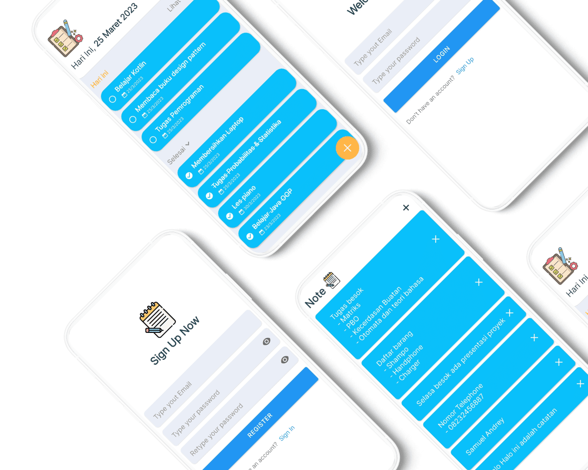

About me 🙂
Hello! I'am Samuel Andrey Aji Prasetya, a Software Engineering student with a focus on Software Development.
I currently study at Dian Nuswantoro University in Semarang, Central Java, Indonesia. I have a deep passion
for technology and a thirst for learning, which drives me to explore letious programming languages and frameworks.
My curiosity and enthusiasm drive me to explore new technologies and stay updated with industry trends.
I enjoy tackling challenging problems and finding innovative solutions through programming.
Education 🎓
Dian Nuswantoro University is one of the A-accredited private universities in Semarang,
Indonesia. Founded in 1990. The Chancellor in 2010 was Prof. Dr. Ir. Edi Noersasongko, M. Kom.
I took the undergraduate study program in informatics engineering at the computer science faculty because it suited my interests and talents.
I am already in my 3rd year of study, in the 6th semester to be precise, with a GPA of 3.93/4.00 and a specialization in software engineering.
Project 💻
During my time in university and internships, I've completed various projects that have enhanced my skills. These include web development, data analysis, and software engineering tasks.
For example, I led a team project on creating a data visualization tool to analyze market trends, and I also contributed to developing a mobile app for internal communication during my internship.
These experiences have strengthened my technical skills and teamwork abilities, preparing me for my career.

Linked Task
Linked Task is an Useful as a list of school or work assignments, useful if there are tasks piling up within the deadline certain time.
Matrix Calculator
A website that provides calculators for calculating matrices, the calculation include determinants, subtraction, transpose, and more.
Smart Door H6
Serving as an access control system, Smart Door H6 incorporates a scheduling mechanism that utilizes student ID cards for entry.